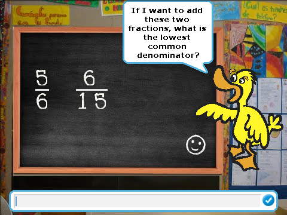

A printable PDF is available.
Homework 2 - Teach Me About Fractions! - Due Monday, Oct. 1
In this homework, you are to pull together a lot of the pieces that we have been creating in the lab exercises to create a simple math tutor program that teaches kids how to add fractions. Your target audience is kids in 5th or 6th grade, so all the numbers that you work with should be small (one or two digits) - that means that the “number stamping” scripts that you wrote in the labs are perfect for this tutor program!
Here’s the basic idea: You should create a BYOB program where you have a “teacher sprite” who will explain the process of finding common denominators and adding fractions to kids, with examples, and then challenge the kids with problems. This is an open-ended assignment: There are minimum requirements that everyone must satisfy (to get 85 out of the 100 possible points), and then there are plenty of extras that can be added on to get the remaining 15 points. The extras are limited only by your creativity, but I give some suggestions below. The following is an example of what this program might look like while it is running:

This uses the digit stamping code to write the numbers on the board (the digit stamping code comes from Lab 3); it uses the pen and movement commands to draw the lines (like we did in Lab 2) in the fractions separating numerator and denominator; and finally it uses the “ask” block to ask the student a challenge question (like we did in the last part of Lab 4). After the student gives an answer, the program can check their answer by using the “common denominator” block from Lab 4. Based on this example, we can describe the minimum requirements of this assignment.
Minimum Requirements (worth 85 points)
Your program should do at least the following:
- Include a “teacher sprite” that gives a little tutorial about how fractions are added, and then challenges the student with some questions. For the minimum requirements, you only need to ask students to find least common denominators.
- You should use the “stamp digit” block and associated two-digit stamping code from Lab 3 to write numbers on the screen both during the tutorial phase of the program and in the question/challenge phase. It should stamp out fractions “nicely”, meaning that single digit values should only stamp one digit (no leading zero!), and numerator and denominator should line up (so if you have a one digit number over a two digit number, the one digit number will be centered over the two digit number).
- Your program should ask at least 3 questions - for the minimum requirements these can be “hard coded”, meaning that the program has the fractions built in and asks the same questions every time.
- Your program should check the answer given by the student against the correct lowest common denominator, and let them know whether they got it right. You should also count the number of correct and incorrect answers.
- At the end of the question phase, use a “say” block to tell the student how many of his or her answers were right and how many were wrong.
Suggestions for Enhancements (worth 15 points)
Once you have a program that satisfies the minimal requirements, you can think of ways to make the program nicer. Some suggestions are given below, but you are by no means limited to these ideas:
- Make a nice background for the tutor program, so it looks like you’re in a classroom.
- Add sounds or animations for when students get answers right or wrong.
- Ask questions beyond what the lowest common denominator is - in fact, you could go all the way up through asking them to find the final sum of the two fractions.
- Generate challenge problems at random. To really do this well, you need to be careful about how you generate the problems. For example, you want all the values the student works with to be reasonably small two digit numbers - having the student come up with the least common denominator of fractions with denominators 14 and 15 is not good (the least common denominator would be 210). To think about ways to do this, think about the math from Lab 4: first pick a random number in the range 1..8 to be the greatest common divisor of your two denominators, then pick small multipliers for the two denominators. So you might generate a GCD of 4, multipliers of 2 and 3, so your two denominators are 8 and 12 (that have a lowest common denominator of 24). You might have to experiment with this a little to get a technique that you like. Also consider that when you pick the numerators, your challenge fractions really should be in lowest terms (so, for example, don’t use 6/8). A fraction is in lowest terms when the GCD of its numerator and denominator are 1.
Hints
Here are some hints for you in this assignment:
- Do not wait until the last minute! I’m giving you two weeks for this assignment, and that’s not because I want you to ignore it for 13 days and try to get it done on the 14th day. If you don’t start right away and pace yourself, you will not be able to get this done.
- You should start off with solutions that you’re sure work for the previous labs. If you aren’t confident in the code you wrote, do the solution walkthroughs that have been provided so that you build good solutions.
- Use the “Import Project” feature in the “File” menu of BYOB to merge solutions that are stored in different files together. (Note that it’s tempting to export and import sprites rather than entire projects, but there are some problems with doing that in BYOB - stick with importing projects and you should be fine.)
- Start by extending the number stamping block to create a fraction stamping block. This should take two parameters, a numerator and denominator, and stamp it out as a fraction, complete with separating line and proper formatting for single/double digit numbers. Test it thoroughly so you’re sure it works, and then after that point you can use your block and not worry about the stamping process any more!
- Extending the idea of the last hint: Create your own blocks whenever you have some actions that you want to abstract, so you can forget the details. This really does make your programming work much, much easier.
- Plan out your work: Write a little script and plan for your tutor program before you start coding things up. You don’t want to be coding and realize that you don’t like the way your tutor program is shaping up, and then have to throw out all that work. It’s like the old carpenters saying: “measure twice, cut once”. Throwing out a program and starting over isn’t as expensive as a carpenter wasting wood, but why give yourself extra work?